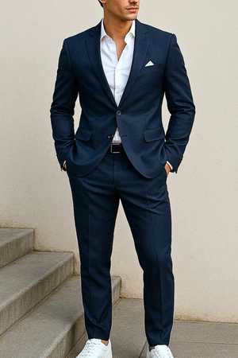
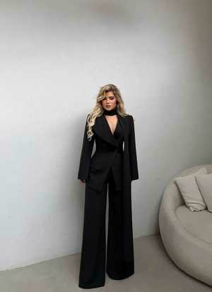

Homenageada da noiteEvellyn Gabrielle Barbosa
Inspirações
Referências elegantes para o evento
Agora sim o material tem mais presença. As escolhas abaixo funcionam como referência real de formalidade e ajudam a evitar look casual demais ou mal resolvido.
Masculino

Terno azul-marinho clássico
Elegante, equilibrado e apropriado para convidados que querem um visual social impecável.
Masculino
Conjunto social preto contemporâneo
Visual sofisticado com linguagem moderna, mantendo a leitura formal do evento.
Feminino

Macacão preto de alfaiataria
Forte, refinado e elegante. Uma escolha excelente para quem quer fugir do óbvio sem errar.
Feminino
Vestido midi sofisticado
Modelo com presença e acabamento elegante, ideal para uma proposta de traje formal.
Dress code
O que usar e o que evitar
A regra existe para elevar o nível visual do evento. Simples assim.
Traje feminino
- Vestido midi, longo, macacão social ou conjunto de alfaiataria.
- Tecidos elegantes, boa modelagem e acabamento refinado.
- Sandália social, scarpin ou calçado formal compatível com a proposta.
- Acessórios discretos, sofisticados e bem coordenados.
- Vermelho, vinho, bordô, marsala, coral e tons claramente avermelhados.
- Jeans, roupas casuais, esportivas ou qualquer visual improvisado.
Traje masculino
- Terno, costume ou combinação social de alfaiataria bem ajustada.
- Camisa social ou peça lisa de acabamento mais nobre, desde que o conjunto continue formal.
- Sapato social ou opção minimalista muito bem resolvida, sem descaracterizar o traje.
- Atenção ao caimento da roupa, postura e apresentação pessoal.
- Peças vermelhas ou com predominância avermelhada.
- Bermuda, camiseta estampada, chinelo ou qualquer look relaxado demais.
Sugestões
Paleta recomendada para os convidados
Essas cores funcionam bem no contexto do evento e ajudam a manter sobriedade e elegância.
Preto
Azul-marinho
Azul escuro
Cinza
Prata
Bege
Marrom
Roxo escuro
Cores proibidas nos trajes
Vermelho, vinho, bordô, marsala, coral e qualquer tonalidade visivelmente avermelhada.
Perguntas frequentes
Dúvidas rápidas
Mulher precisa usar vestido obrigatoriamente?
Não. Macacão social e conjunto de alfaiataria também são adequados, desde que mantenham leitura formal.
Homem pode ir sem gravata?
Pode, desde que o conjunto permaneça elegante e claramente compatível com a proposta do evento.
Posso usar um detalhe pequeno vermelho?
O melhor é evitar. Quando a regra abre exceção, vira discussão desnecessária. Então não use.
Se eu estiver em dúvida sobre meu look, o que faço?
Envie a foto para a organização antes do evento. Melhor alinhar antes do que aparecer destoando depois.
Versão premium finalizada.
Esta versão tem visual mais elegante, mais forte e mais coerente com uma formatura. O material agora parece pensado, não improvisado.